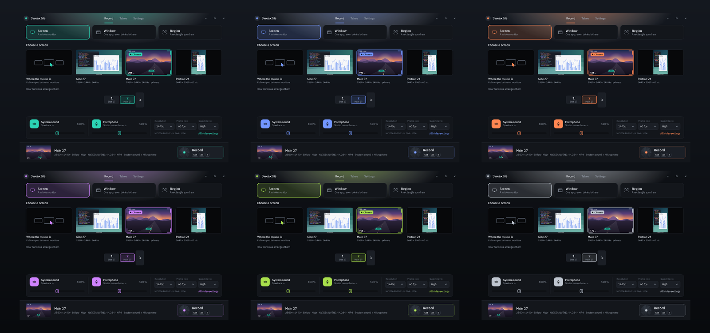

Opens like a lens.
Record a screen, a window or a region you draw, with system sound and your microphone. Pause and carry on in the same file. The graphics card's own video engine does the work, so even 1440p at 144 fps keeps every frame.
Click what you want to record.
Every monitor, every open window and your last region wait as live pictures. Choose one and the record strip says exactly what will happen: picture, size, frame rate, quality, encoder and sound.
Live pictures
Tiles refresh a few times a second, the chosen one faster. Hover lifts a tile, choosing it pulls focus. With several monitors a to-scale map shows how they sit.
Faders that are meters
The bar is how loud the source is, the knob is its volume: 0–200 %, a soft click at 100 %, the wheel works too. The device is one click away.
The program picture
While recording, the picker gives way to what is being recorded, large, with REC and the time. Takes and Settings are pages of their own.
A rectangle in two keys.
Press the region shortcut. Every screen dims and a dock drops in. Hover a window and the frame glides onto it; click to take it, or drag anywhere to draw.
- Frame shapes: Free, 16:9, 9:16 for Shorts and Reels, 1:1, 4:3.
- Exact size: type the pixels, or pick 4K, 1440p, 1080p, 720p, 1080 × 1920.
- Edges snap to windows and screen edges; Alt draws freely.
- A loupe shows the pixel under the pointer, with its colour.
- Arrows nudge, Ctrl + arrows resize, Enter records, Esc cancels.
CtrlAltA
Try the picker
This is the picker's logic, in your browser. Hover a window, click to take it or drag to draw. Choose a shape; edges snap. Arrows nudge, Enter records.
Everything a recorder should, nothing in the way.

A region in two keys
Exact to the pixel on every monitor, with frame shapes, typed sizes, snapping and a loupe. The last region is remembered.

Pause into the same file
Pausing stops the recording's own clock. Picture and sound follow it, so the file plays straight through.

The graphics card does the work
NVENC and AMF read frames straight from video memory. H.264, HEVC, AV1; x264 when there is no hardware.

Sound you control
System sound and microphone, each with a switch, a device and a fader that is also its meter. Mute on a key, separate tracks, one app only.

Macro keys welcome
Every shortcut is set by pressing it. Pause, Scroll Lock and F13–F24 work on their own: perfect for a G key.

Never in its own video
The studio, the bar, the region picker, the frame and the countdown are kept out of every capture by Windows itself.
Recording, takes and every setting.
While recording, the picker gives way to the program picture. Takes and Settings are pages of their own, every shortcut included.
Your keys. Your macro keys too.
| Action | Default |
|---|---|
| Start / stop recording | CtrlAltR |
| Pause / resume | CtrlAltP |
| Record a region | CtrlAltA |
| Mute the microphone | CtrlAltM |
On a Monster Pusat K3 Pro: REC → G1 → Pause → REC teaches G1 to press Pause. Then click a shortcut in Settings and press G1.
Six lens coatings.
Light, dark or like Windows, and a coating for the accent. Recording is always tally red. Try them on this page.

Every frame, checked.
A self-test records only what SweaxIris draws itself — each frame stamped with its time, a flash and a tone every second — and reads the files back.
| Encoder | Size · fps | Frames lost | Sound vs picture |
|---|---|---|---|
| NVENC H.264 | 1920×1080 · 60 | 0 | −0.1 ms |
| NVENC H.264 | 2560×1440 · 144 | 0 | −0.2 ms |
| NVENC HEVC | 3840×2160 · 60 | 0 | −0.1 ms |
| NVENC AV1 | 2560×1440 · 120 | 0 | −0.1 ms |
| AMF H.264 | 1920×1080 · 60 | 0 | −0.2 ms |
| AMF HEVC | 2560×1440 · 60 | 0 | −0.1 ms |
| x264 | 1920×1080 · 60 | 0 | −0.1 ms |
RTX 4070 SUPER · Ryzen 5 7600 (AMF on its integrated graphics) · Windows 11. Across pauses the flash and the tone stay within one frame.

Free, for Windows 10 and 11.
Installer
Installs for your user only, no administrator. Can start with Windows so the shortcuts always work.
Portable zip
Runs from any folder. SHA256SUMS.txt lists the checksums. Windows may warn once: More info → Run anyway.
Questions
A game shows black.
Games in true exclusive fullscreen are not composed by Windows. Use borderless or fullscreen-optimised mode, the default in most DirectX 11/12 games.
Shortcuts do nothing in one program.
That program runs as administrator, and Windows keeps its keys from normal programs. Run SweaxIris as administrator too, or start recording with SweaxIris.exe --record.
MP4 or MKV?
MP4 opens everywhere. MKV survives a crash or a power cut: it plays up to that moment.
Does it send anything?
No. SweaxIris works offline, with no account and no telemetry.